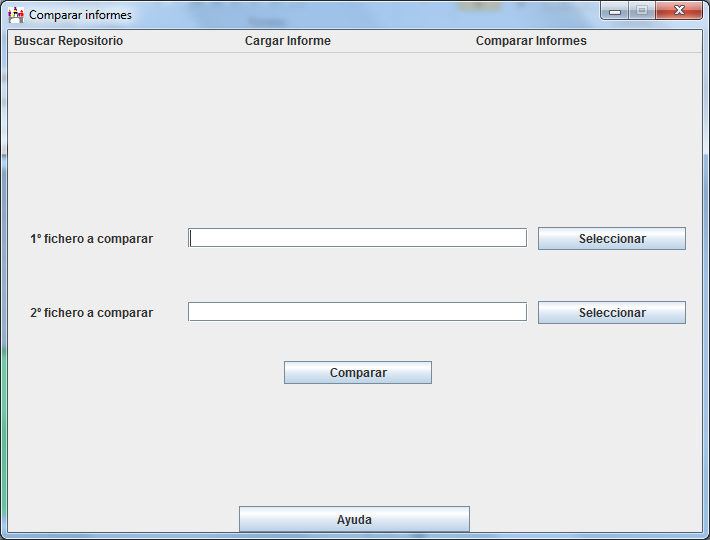

En esta pantalla se introducen las rutas de los dos informes que queremos comparar.
Podemos introducirlos directamente o usar los botones de selección. Si seleccionamos el mismo informe nos mostrara un error. Si la primera línea del informe no tiene guardada la plataforma mostrara un error. Si la plataforma no es la misma mostrara un error.
El botón comparar muestra los resultados de la comparación.
